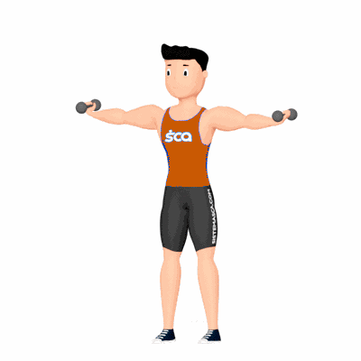

Rosca Direta Alta com Halter

Exercício de musculação para fortalecimento e hipertrofia do bíceps, com ativação do braquial e braquiorradial. Indicado para praticantes de todos os níveis que buscam aumento de força e massa na região do braço.
Ficha Técnica
Tipo: Musculação
Grupo Muscular: Bíceps
Aparelho: Nenhum
Músculos: Nenhum
Como realizar
- Fique em pé com os pés na largura dos ombros e segure um halter em cada mão com pegada supinada;
- Mantenha os cotovelos junto ao corpo e o abdome contraído;
- Inspire e flexione os cotovelos elevando os halteres até a altura dos ombros;
- Segure brevemente a contração no topo;
- Expire e desça de forma controlada até a posição inicial;
- Repita conforme a prescrição.
 RC STORE
RC STORE